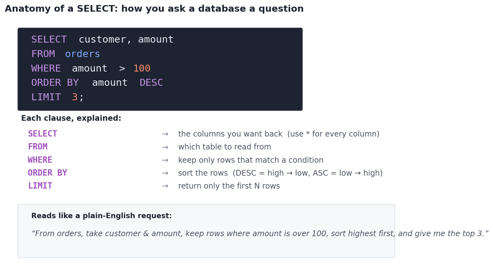
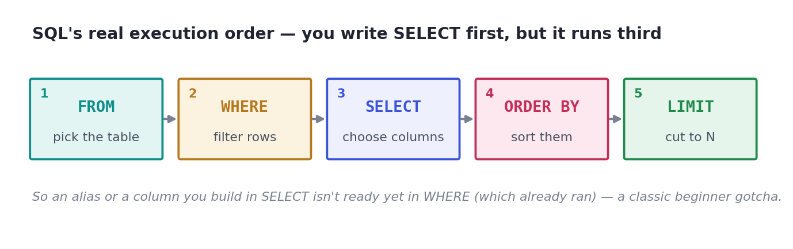

SELECT: Asking a Database a Question
Tables, and the five clauses of a SELECT — SELECT, FROM, WHERE, ORDER BY, LIMIT — run live against a real table in the page.
Here is a fact nobody tells beginners loudly enough: in almost every data job, the data does not arrive as a tidy CSV. It lives in a database — often billions of rows across many tables — and the only way to get it out is SQL. That's why practically every data-science and analytics interview has a dedicated SQL round. The good news: the core of SQL is small, surprisingly readable, and you can be genuinely useful with it in an afternoon. This lesson teaches the one statement you'll write more than any other — SELECT — and by the end you'll be running real queries against a real table, right here in the page.
ConceptWhat SQL is, in one breath
SQL (Structured Query Language, say it "sequel" or spell it out — both are fine) is the language for asking questions of data stored in tables. A table is just a grid, exactly like a spreadsheet: each row is one record (one order, one user) and each column is one field (amount, country). A database is a collection of such tables that a query reads from.
The thing that makes SQL easy to learn is that it's declarative: you describe what you want, not how to fetch it. You say "give me the customer and amount for orders over 100, biggest first" — and the database figures out the efficient way to do it. You'll spend your time describing results, not writing loops.
Concept · the whole lesson in one pictureThe five clauses of a SELECT
Ninety percent of everyday SQL is one statement — SELECT — built from a handful of clauses that always appear in the same order. Learn these five and you can already answer real questions:

SELECT names the columns, FROM names the table, WHERE keeps only matching rows, ORDER BY sorts them, and LIMIT caps how many come back. Read top to bottom, it's almost an English sentence.A few conventions from that picture: keywords like SELECT and WHERE are traditionally written in UPPERCASE (SQL doesn't require it, but it makes queries readable). * is a shortcut meaning every column. Text values go in single quotes ('US'), numbers don't (100). And a statement ends with a semicolon ;.
Worked example · real SQL, liveRun your first queries
Let's actually run SQL. We'll use sqlite3 — a tiny database that's built into Python (and into this page), so there's nothing to install and you can click Run. First we create a small orders table and look at everything in it with SELECT * FROM orders:
import sqlite3
db = sqlite3.connect(":memory:") # a throwaway in-memory database
db.executescript("""
CREATE TABLE orders (
id INTEGER, customer TEXT, category TEXT,
amount REAL, country TEXT
);
INSERT INTO orders VALUES
(101,'Ada', 'Electronics',240,'US'),
(102,'Blake','Apparel', 45,'US'),
(103,'Chen', 'Electronics',220,'CA'),
(104,'Diego','Home', 130,'MX'),
(105,'Ada', 'Apparel', 190,'US'),
(106,'Priya','Electronics',510,'CA'),
(107,'Blake','Home', 160,'US'),
(108,'Chen', 'Electronics',300,'US');
""")
def run(sql): # run a query, print it as a table
cur = db.execute(sql)
cols = [c[0] for c in cur.description]
rows = cur.fetchall()
w = [max(len(str(v)) for v in [col, *(r[i] for r in rows)])
for i, col in enumerate(cols)]
show = lambda vals: " ".join(str(v).ljust(w[i]) for i, v in enumerate(vals))
print(show(cols))
print(show(["-" * n for n in w]))
for r in rows:
print(show(r))
run("SELECT * FROM orders") # <- the SQL. everything else is just plumbing.id customer category amount country --- -------- ----------- ------ ------- 101 Ada Electronics 240.0 US 102 Blake Apparel 45.0 US 103 Chen Electronics 220.0 CA 104 Diego Home 130.0 MX 105 Ada Apparel 190.0 US 106 Priya Electronics 510.0 CA 107 Blake Home 160.0 US 108 Chen Electronics 300.0 US
That run() helper is just there to print results nicely — ignore it and keep your eye on the SQL string, which is the part that matters. Now let's ask a real question instead of dumping the whole table: who placed the three biggest US orders over $100? That's all five clauses working together:
import sqlite3
db = sqlite3.connect(":memory:")
db.executescript("""
CREATE TABLE orders (id INTEGER, customer TEXT, category TEXT, amount REAL, country TEXT);
INSERT INTO orders VALUES
(101,'Ada','Electronics',240,'US'),(102,'Blake','Apparel',45,'US'),
(103,'Chen','Electronics',220,'CA'),(104,'Diego','Home',130,'MX'),
(105,'Ada','Apparel',190,'US'),(106,'Priya','Electronics',510,'CA'),
(107,'Blake','Home',160,'US'),(108,'Chen','Electronics',300,'US');
""")
def run(sql):
cur = db.execute(sql)
cols = [c[0] for c in cur.description]
rows = cur.fetchall()
w = [max(len(str(v)) for v in [col, *(r[i] for r in rows)])
for i, col in enumerate(cols)]
show = lambda vals: " ".join(str(v).ljust(w[i]) for i, v in enumerate(vals))
print(show(cols)); print(show(["-" * n for n in w]))
for r in rows: print(show(r))
run("""
SELECT customer, amount
FROM orders
WHERE amount > 100 AND country = 'US'
ORDER BY amount DESC
LIMIT 3
""")customer amount -------- ------ Chen 300.0 Ada 240.0 Ada 190.0
Trace how the clauses cooperated: FROM orders picked the table, WHERE amount > 100 AND country = 'US' threw away every row that wasn't a US order above $100, ORDER BY amount DESC sorted the survivors highest-first, and LIMIT 3 kept only the top three. Chen's $300 order leads; note that Ada appears twice because she has two qualifying orders — SQL returns rows, not people (grouping by person is the next lesson). Change DESC to ASC, or 'US' to 'CA', hit Run, and watch the answer change.
Interactive labYour turn - write your first query
Return the customer and amount of every Electronics order, biggest first.
SELECT customer, amount FROM orders WHERE category = 'Electronics' ORDER BY amount DESCText values need single quotes; DESC puts the largest amount first.
★ Key points to remember
- SQL is how you pull data out of databases, where real-world data lives. It's a near-universal, interviewed job skill.
- Data sits in tables (rows = records, columns = fields). SQL is declarative: you say what you want, not how to get it.
- A
SELECThas five everyday clauses, always in this order:SELECT(columns) ·FROM(table) ·WHERE(filter rows) ·ORDER BY(sort) ·LIMIT(cap rows). *means every column; text literals need'single quotes';DESCsorts high→low,ASClow→high.WHEREfilters rows by a condition;SELECTchooses columns. Keeping those two straight is half of beginner SQL.
SELECT name, price FROM products WHERE price > 50 ORDER BY price ASC LIMIT 5;SELECT * FROM orders, what does the * mean?SELECT * FROM orders WHERE country = US and get an error. What's wrong?◆ Practice▸
orders table from the worked example, write a query that returns the customer and amount of every Electronics order, largest amount first.Show solution & reasoning
SELECT customer, amount FROM orders WHERE category = 'Electronics' ORDER BY amount DESC; — WHERE filters to the Electronics rows, ORDER BY amount DESC sorts them high-to-low. You'd get Priya 510, Chen 300, Ada 240, Chen 220. (No LIMIT, so all four come back.)
SELECT * FROM orders ORDER BY LIMIT 5; It errors. What did they forget, and what's a correct version?Show solution & reasoning
ORDER BY needs to know which column to sort on — they left it blank. If a higher id means newer, a correct query is SELECT * FROM orders ORDER BY id DESC LIMIT 5; — sort by id, highest (newest) first, then keep 5. Always pair ORDER BY with a column (and usually a direction).
◎ Deep dive: execution order, the NULL trap, DISTINCT, and SELECT * in the real world▸

Execution order is not writing order. Although you write SELECT ... FROM ... WHERE ..., the engine runs them as: FROM (get the table) → WHERE (filter rows) → SELECT (pick/compute columns) → ORDER BY (sort) → LIMIT (cut). The practical consequence: a new column or alias you create in SELECT doesn't exist yet when WHERE runs, so WHERE my_alias > 5 fails. You'd repeat the expression in WHERE, or filter later with HAVING (a Track-topic for grouped queries).
NULL is not zero — it's 'unknown'. Databases use NULL for missing values, and it behaves surprisingly: amount > 100 is neither true nor false for a NULL amount, so those rows are silently dropped by WHERE. To find or keep missing values you must say WHERE amount IS NULL or IS NOT NULL — never = NULL, which never matches anything. Forgetting this quietly loses rows and is a classic bug (and interview question).
Two more everyday tools. DISTINCT removes duplicate rows from a result — SELECT DISTINCT country FROM orders lists each country once. And SELECT * is fine for exploring, but in real code you should name the columns you want: it's faster, and it won't silently break when someone adds or reorders columns in the table. Comments use -- for the rest of a line, and keywords are case-insensitive (select works), though UPPERCASE is the readable convention.
Expect a live SQL screen. The bread-and-butter task is exactly this lesson: "from this table, return these columns, filtered like so, sorted, top N." Two favorite gotchas hide here — that WHERE runs before SELECT (so SELECT aliases aren't usable in WHERE), and that NULLs vanish from WHERE comparisons unless you use IS NULL. Say those two out loud correctly and you'll look seasoned.